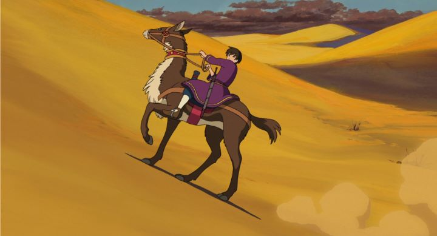

Ok, let's address the dragon in the room. If you've even heard of "Tales From Earthsea," the 2006 animated adaptation of the American fantasy book series, then you've probably already seen or have heard of the rest of the classic movies by Studio Ghibli. You know that just about all of Ghibli's movies are required viewing. They don't make bad movies. All except "Earthsea"... Ghibli fans seem to hold this one movie with more disappointment than others. Frankly, this opinion is a bit unfair, and could be calculated by an outside observer as the result of many issues coming together. The "Earthsea" novels are a beloved series, even already receiving adaptations elsewhere, more well known than any original work Ghibli had adapted. It would be critiqued with fine attention to detail, high expectations would be set, higher than even having the "Ghibli" name in the credits. Adapting multiple novels into a single film isn't easy to do well, and after "Howl's Moving Castle," it was clear that a Ghibli adaptation would make great differences in the storyline, whether fans were accepting or not. Also, this would be the directorial debut of Goro Miyazaki, the son of Hayao Miyazaki, the beloved and award-winning director that practically built the Ghibli brand. Any new director helming a Ghibli film would be met with some doubt, and that Goro is "a Miyazaki" meant he had even bigger shoes to fill. Goro would later say he had no intention to enter the animation industry, doing so much later after working as a landscaper and manager of the Ghibli museum, slowly becoming more involved and feeling obligated to take a role in making a film. To his credit, the few other animated works he would direct after were better received, but "Earthsea" seemed destined to fail from the start. Even when Hayao and the author Le Guin seemed initially accepting and positive of the film, they would slightly change their opinions after such a disappointing critical reception.Now, here's my opinion: "Tales From Earthsea" is a good movie. Not a great movie, and not as good as most of Ghibli's other films. But better than the average anime film, and generally still a film I think Ghibli can be proud of.The story is a bit scattered, starting with the realization that dragons in the land of Earthsea are restless, a bad omen, although dragons don't really make an appearance again until the very end of the movie. Elsewhere, Prince Arren, the lead character, secretly stabs his father, a beloved king, stealing his sacred sword and escaping the kingdom. Why did Arren kill his father? A reason is never given, be it politcal or relationship-based, or driven by dark magic taking over his actions. I suspect it might simply have been a matter of unchecked teenage agnst, perhaps exploding from high expectations being forced on him as a prince, or desparation to escape to the world he knows (any relation to the director's own emotions can be made at your leisure). Arren comes across Sparrowhawk, a wandering Archmage, who takes Arren under his wing as this medival fantasy's "Gandalf"-like character, protecting him from harm and giving a few life-lessons along the way. When Arren seems able to settle down at a small farm doing real work, he is forced to face his internal demons to fight the evil magician Cob when Sparrowhawk is unable to win alone. A lot happens in "Tales From Earthsea" without a great sense of direction. However, I feel a sense of honesty towards Arren and his predicament. While a little too on the nose, I think his attitude and behavior is one of the best-realized forms of teenage agnst, anxiety and depression I've ever seen, animated film or elsewhere. Arren seems to put absolutely no value to his own life, all-to-eager to throw it away in a fight if served for a greater purpose, or sometimes for no purpose at all. That type of character doesn't appear in fiction too often, because it's the type of self-defacing person you would slap to say "get over yourself" and move on to "real" drama or plot. But for people who can relate even a little to Arren, his character can be appreciated. The girl his age on the farm with a secret, Therru, is similarly a quiet and socially awkward person with a large scar on her face. These types of characters are important, no matter how "lame" you might think them to be.I also like Cob as a villian. A simple character, he is designed like a creepy white shadow, like a distant cousin of Lord Voldemort of the "Harry Potter" universe. I saw "he," although his gender is never specified due to insignificance. He is played by a woman in the Japanese dub, but by Wlliem Dafoe in the English dub, and his excellent performance alone makes the English dub worth watching, in addtion to assisting with the European atmosphere. The visual design is less detailed than most of Ghibli's movies. Normally, backgrounds are painted with great detail, but here, there are several moments when detail is explicitly sparse, like when scenes take place in the sand dunes or on grassy hills. This is oddly refreshing in its simplicity, and thanks to good color palettes, the movie is still beautiful to look at. The music score is appropriately grand. Goro's director skills can be seen as clumsy during a few weird cuts between scenes, and this is probably the most damaging part of the movie, but not enough to break it or ruin the story... beyond some issues the story already had. Yes, the serious story is a little weak around the edges, and direction leaves a lot to be desired. But there is enough good work in "Tales From Earthsea" to make it a fascinating fantasy adventure, and its focus on internal emotional struggles of its main characters is a bold and unique vision. It deserves a bit more respect than its received.
- "Ani" More reviews can be found at : https://2danicritic.github.io/ Previous review: review_Sword_of_the_Stranger Next review: review_Tales_of_Vesperia_-_The_First_Strike